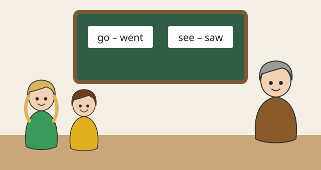

Verben mit drei Formen: sing – sang – sung
Mit einem KI-Tutor lernen
Ein KI-Tutor erklärt dir diese Seite und hilft dir bei den Aufgaben. Wähl deinen Assistenten:
Mit Claude öffnen Mit ChatGPT öffnen Mit Mistral Vibe öffnen
Du nutzt dein eigenes Konto beim Anbieter. Der Assistent ist kein Angebot von lernapps.net: lernapps liefert nur Inhalte und Aufgaben. Die Wahl gilt für alle Seiten, nur auf diesem Gerät.
Zwei Karten an der Tafel

© CC-BY-4.0Mr Hill (graue Haare) hängt zwei Karten an die Tafel.
Sophie sagt zu Mr Hill: „Yesterday I went to school.“ Go heißt gehen. Mr Hill hängt zwei Karten an die Tafel.
Aufgabe
Lösung
Go ist ein unregelmäßiges Verb. Es hat eine eigene Form und bekommt kein -ed. richtige Antwort
Manche Verben ändern ihr Wort im simple past, statt ein -ed zu bekommen. Went gehört zu go.
Sophie hat sich versprochen.
Went ist richtig. Es ist die Form von go im simple past.
Went ist die Form für die Gegenwart.
Went steht bei Zeitangaben wie yesterday. Die Gegenwart wäre go.
Bei unregelmäßigen Verben musst du die Form kennen. Ein -ed hilft hier nicht.
Das kannst du danach: Du kennst die wichtigsten unregelmäßigen Verben und bildest ihr simple past und ihre 3. Form.
Karten mit drei Formen, nach Klang sortiert
Jede Karte hat drei Formen, die Grundform, das simple past und die 3. Form. Die 3. Form brauchst du gleich auf der nächsten Seite. Die Karten sind nach ihrem Klang sortiert. Wer ein Muster kennt, merkt sich viele Verben auf einmal.
| Grundform | simple past | 3. Form |
|---|---|---|
| sing (singen) | sang | sung |
| swim (schwimmen) | swam | swum |
| drink (trinken) | drank | drunk |
| begin (anfangen) | began | begun |
| ring (klingeln) | rang | rung |
| Grundform | simple past | 3. Form |
|---|---|---|
| write (schreiben) | wrote | written |
| drive (fahren) | drove | driven |
| ride (reiten) | rode | ridden |
| take (nehmen) | took | taken |
| give (geben) | gave | given |
| eat (essen) | ate | eaten |
| see (sehen) | saw | seen |
| know (wissen) | knew | known |
| Grundform | simple past | 3. Form |
|---|---|---|
| buy (kaufen) | bought | bought |
| bring (bringen) | brought | brought |
| think (denken) | thought | thought |
| catch (fangen) | caught | caught |
| teach (unterrichten) | taught | taught |
| make (machen) | made | made |
| say (sagen) | said | said |
| pay (bezahlen) | paid | paid |
| meet (treffen) | met | met |
| sit (sitzen) | sat | sat |
| get (bekommen) | got | got |
| find (finden) | found | found |
| lose (verlieren) | lost | lost |
| leave (verlassen) | left | left |
| Grundform | simple past | 3. Form |
|---|---|---|
| come (kommen) | came | come |
| run (rennen) | ran | run |
| Grundform | simple past | 3. Form |
|---|---|---|
| cut (schneiden) | cut | cut |
| put (legen) | put | put |
| hit (schlagen) | hit | hit |
| let (lassen) | let | let |
| read (lesen) | read | read |
| Grundform | simple past | 3. Form |
|---|---|---|
| go (gehen) | went | gone |
| do (tun) | did | done |
| be (sein) | was / were | been |
| have (haben) | had | had |
Merke
Im simple past nimmst du die 2. Spalte: Yesterday I went to school. Die 3. Form ist eine andere Karte: gone gehört nicht zu yesterday. Hänge bei diesen Verben kein ed an: goed, eated und buyed gibt es nicht.
| Englisch | Deutsch |
|---|---|
| break | kaputt machen |
| speak | sprechen |
| sink | sinken |
Übung
Aufgabe
Lösung
Richtige Antwort: eat – ate; see – saw; buy – bought; swim – swam; take – took
Diese Verben haben eine eigene Form im simple past.
Aufgabe
Wähle die richtige Form.
- Peter hat gestern einen Brief geschrieben. → Yesterday Peter … a letter.
- Peter hat letzte Woche Pizza gegessen. → Peter … pizza last week.
- Ellie hat gestern einen Film gesehen. → Ellie … a film yesterday.
- Wir haben vor zwei Tagen ein Buch gekauft. → We … a book two days ago.
Lösung
- Yesterday Peter wrote a letter.
- Peter ate pizza last week.
- Ellie saw a film yesterday.
- We bought a book two days ago.
Aufgabe
Mr Hill hängt neue Karten auf. Die Verben sind neu. Rate die Formen nach den Mustern.
Tipp
Sink: i – a – u wie sing. Bei break und speak endet die 3. Form auf n wie bei write.
| Grundform | simple past | 3. Form |
|---|---|---|
| sink | … | … |
| break | … | … |
| speak | … | … |
Lösung
- sink · sank · sunk
- break · broke · broken
- speak · spoke · spoken
Aufgabe
Schreibe den ganzen Satz im simple past.
- Amir · take · a book · last week
- Sophie · go · home · yesterday
- Ellie · drink · water · two days ago
- Peter · come · to school · last week
Lösung
- Amir took a book last week.
- Sophie went home yesterday.
- Ellie drank water two days ago.
- Peter came to school last week.
Aufgabe
In jedem Satz steckt ein Fehler. Schreibe den Satz richtig.
- Sophie swimmed two days ago.
- Amir bringed a book yesterday.
- Ellie writed to Sophie last week.
Lösung
- Sophie swam two days ago.
- Amir brought a book yesterday.
- Ellie wrote to Sophie last week.
Aufgabe
Lösung
Sophie drank tea yesterday. richtige Antwort
Drink ist unregelmäßig. Im simple past heißt es drank.
Sophie drunk tea yesterday.
Drunk ist die 3. Form. Die brauchst du erst auf der nächsten Seite, nicht für yesterday.
Sophie drinked tea yesterday.
Bei drink hängst du kein ed an. Die Form ändert sich im Wort.
Bei yesterday steht die 2. Form.
Aufgabe
Hör zu und schreibe, was du hörst.
- KI
- KI
- KI
Lösung
- Peter sang a song at the party.
- We drank water at home.
- Sophie sang at home yesterday.
Selbst sagen und schreiben
Aufgabe
Hör zu, sprich nach und nimm dich auf. Vergleiche dann mit dem Original.
Tipp
Hör den Satz zuerst. Sprich dann langsam nach und achte auf die Verbform, die kein -ed hat.
- Peter ran home yesterday.KI
- Ellie sat with Amir.KI
- Amir bought a drink at the shop.KI
Zum Aufnehmen braucht diese Aufgabe JavaScript. Die Beispiele kannst du auch ohne anhören.
Lösung
- Peter ran home yesterday.
- Ellie sat with Amir.
- Amir bought a drink at the shop.
Offene Aufgabe
Sophie schreibt eine Karte, die als einzelner Punkt links von now am Zeitstrahl hängt. Schreibe zwei Sätze darüber, was Ellie, Peter oder Amir letzte Woche oder gestern gemacht haben. Nimm ein unregelmäßiges Verb von den Karten.
Eine gute Antwort enthält:
Lösung
Peter ate pizza yesterday. Ellie went to school last week.
Wie es weitergeht
Mr Hill hat auch die 3. Form auf die Karten geschrieben. Dann bringt Ellie einen fertigen Kuchen mit. Auf der nächsten Seite lernst du, wofür du die 3. Form brauchst.
Fehler gefunden oder eine Idee für diese App?